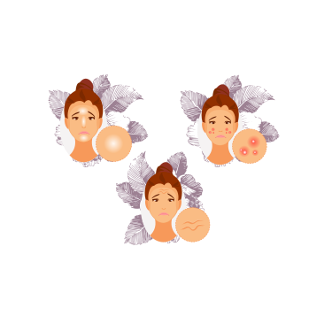

El cuidado de la piel es algo que a diario se necesita pero a veces traerlo a nuestra piel y a nuestras rutinas es complicado así que en esta página quiere ayudarte de manera fácil y general como implementarlo y si tienes algo específico puede sumar conocimientos como combatirlo y prevenirlo
 |
El cuidado diario te puede ayudar a prevenir un sinfin de enfermedades cutaneas y puedes hacerlo con pasos basicos |
Cuidado Diario |
tenemos ciertas enfermedades que nos aquejan como el acné, la rosase ya sea por herencia o por que se desarrollaron a través del tiempo por lo cual aquí encontrarás posibles causas y algunas recomendaciones básicas |
 | Afecciones |
 |
Hay muchísimos productos para lo mismo pero aveces no son lo mas adecuado pero no entendemos porque asi que en la seccion de productos vas a encontrar los principales principios activos que te sirven para tratar las afecciones y sepas como buscar los productos correctos y mejor resultados vas a tener |
productos |